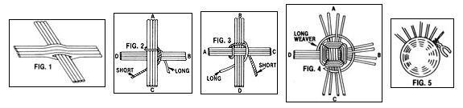
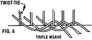
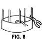
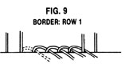
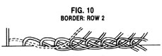
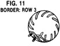
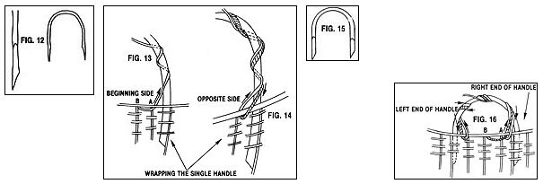

For your home, as gifts, or to sell . . . beautiful baskets can be the work of your own hands.
Everybody loves a basket! And whether you're using that woven container to tote vegetables from the garden, display fruit on your kitchen table, or just stash away an unfinished needlework project, you'll find that your satisfaction in the task is doubled if the basket is one you've made yourself.
There are many different materials available for crafting these beautiful carriers, but one of the best is reed. Strong, pliable, and light, reed comes from the core of the long shoots of the rattan palm, which grows in the tropical forests of many South Pacific islands. These shoots reach lengths of 200 to 600 feet as they trail over the floor of the jungle or hook onto other trees and plants. And once the thorny outer bark has been removed, the smooth, glossy underbark is stripped off in specific widths to be used for caning chair seats and such.
Beneath this layer is the actual reed - the core of the vine - which is harvested and machine-processed into round and flat strips of different diameters and widths. The sizes range in diameter from No. 0 at 1/64" (used for making miniatures) to No. 12 at 3/8" (used for sturdy handles). As a rule, the spokes - which are the ribs or framework - of a basket should be two numbers coarser than the weavers. . . which are the flexible strands that are woven over and under the spokes.
Reed is sold in one-pound bundles priced at approximately $5.00 to $7.00 each. It can be purchased either from craft stores or through such mail order suppliers as H.H. Perkins Co. (Dept. TMEN, 10 South Bradley Road, Woodbridge, Connecticut 06525 . . . catalog free), the Cane & Basket Supply Co. (Dept. TMEN, 1283 South Cochran Avenue, Los Angeles, California 90019 . . . catalog $1.00, refundable with order), or The Earth Guild (Dept. TMEN, 1 Tingle Alley, Asheville, North Carolina 28801 . . . price list free).
ON NATURE AND BRISTLES
Since reed is a natural material, each of the strands will have its own unique character. After you've soaked a bunch of them in water (the first step in the basket-weaving process), you'll find that some lengths are very strong and sturdy . . . others feel as soft as cooked spaghetti, and still others snap all too easily. To sort out the No. 5 (1/8") reed that's generally used for the basket spokes, leave an entire bundle in warm water for five minutes. Because the spokes must be firm and strong, you can then discard any that feel spongy or soft. No. 2 (5/64") reed is often selected for the weavers . . . and all but the most brittle of these can be used. Do save the more pliable ones for starting the base of the container, though, as that's where the coils are tightest.
You'll have to use care not to soak too much reed at a time, because if the material is kept wet for too long, it becomes "hairy" . . . and although some reed is naturally bristly, prolonged soaking will bring out these whiskers in droves! It's best to leave the selected strands in water for just ten minutes or so before using them, and then keep them under a damp towel as you work. [EDITOR'S NOTE: According to one authority, adding a teaspoon of glycerin to each quart of soaking water will help prevent fraying.] Any hairs that do show up on a finished basket can be burned off with a propane torch or over a gas stove . . . but do be sure to wet the container first, and then move it rapidly over the flame, or your masterpiece might catch fire! (Don't use a match or candle for this purpose. Either one gives off carbon, which will blacken your basket.)
Finally, let any wetted reed dry thoroughly before you put it away . . . otherwise it'll likely mildew.
WEAVING IN THE ROUND
The basic round basket illustrated here is made with what's called separate base construction, which simply means that the bottom is woven first and then more spokes are added to make the sides. Japanese weave is used for the base, and triple and chasing weaves for the sides. The border is a four-row trac, and the handles have a rope wrap.
For this project you'll need several sizes of round reed: one-half pound of No. 2 for weavers . . . one-quarter pound of No. 5 for spokes . . . and either two 15" lengths of No. 8 (1/4") for side handles, or one 33" length of No. 10 (5/16") to make a single handle. (If No. 10 is unavailable, use two lengths of No. 5.)
You'll also need diagonal cutters, needlenosed or round-nosed pliers, an awl (bone is best), a knife, a tape measure, twistties, a plastic dishpan, an old enamel pan (one that you don't mind staining), a towel, and powdered dye (for the basket shown here, I used rust and evening blue).
PREPARING THE REED
Once you have all your materials together, carefully cut all the outer bands of a No. 2 bundle, but do not cut the bands that hold the smaller groupings of strands together. Gently pull out one long strand at a time, roll it into a six-inch coil, and wrap the end two or three times through the center to hold it.
With a number of coils ready, fill the enamel pan with eight cups of water and the whole package of rust dye. (Leftover mixed dye can be saved for later use.) Bring the water to a simmer, then drop in three of the coiled strands of No. 2 reed. Let them dye for three or four minutes, turning them frequently. When the color looks dark enough (remember, it'll become lighter again as it dries), remove the strands and rinse them thoroughly in cold water. If the reed doesn't look dark enough after it's been rinsed, put the strands back in the dye for another few minutes. Do be sure the material is rinsed thoroughly once it's dyed, though, or the color will run during the soaking process and stain the whole basket. (It's best to soak each shade of dyed reed in a separate container.)
Next, prepare the package of blue dye in the same manner as you did the rust. The blue color takes longer to set, so allow eight strands of No. 2 to simmer for five to six minutes this time. Again, rinse the reed thoroughly when you're done.
FROM THE BOTTOM UP
To start the base of the basket, cut eight 7-1/2" spokes of No. 5 reed, and soak them in warm water, for five minutes, along with a handful of No. 2 reed. Then, with the awl, punch a hole in the center of each of four of the spokes, carefully making the holes large enough to thread the other four spokes through, as shown in Fig. 1.
Now, take a long, pliable No. 2 weaver and fold it at a point 20 inches from one end. Hold the spoke cross with arm A at the top (see Fig. 2) and slip the weaver over that arm with both ends to the back and the short end of the weaver on the left. Take the long weaver down behind arm B, holding it snug but out of the way so you don't cross over it on the next step. Then draw the short weaver behind A, up over B, and under C.
Next, turn the cross so that B is up. Hold the short weaver tight but out of the way, and bring the long weaver in front of C and behind D (Fig. 3). Turn the cross so C is up, and take the short weaver in front of D and behind A, this time holding the long weaver out of the way. Go on to repeat this maneuver, weaving and turning the cross, until there are four rows on each arm . . . front and back.
At that point, leave the short end under A, and - working with the long end of the weaver - begin to separate the spokes with Japanese weave: over two spokes and under one (as illustrated in Fig. 4). Always keep the same surface facing you, and weave in a clockwise direction.
Your first few rows of Japanese weave will probably look a bit square. This situation is quite common . . . it's the result of not separating the spokes enough. Don't be afraid to pull and tug on both spokes and weavers to remedy this . . . they're very strong and can take a lot of stress. By the time you've completed about half an inch of weaving, the spokes should be splayed out evenly like those on a wheel.
Check your work as you go to be sure the base spokes are lying straight (the weavers should do all the bending). The rows of weaving should also be very close together . . . so when a strand goes over two spokes, pull it in toward the center of the base from the back before bringing it up to the front again. When a weaver passes under one spoke, leave enough play so that it doesn't bend the spoke . . . and, again, draw the weaver in toward the center button of the base. (At this point in your project the Japanese weave will look rather jumbled, but after seven or eight rows it'll begin to take on a more recognizable pattern.)
Of course, you're going to use up your initial weaver strand somewhere along the line and need to replace it with a new one. To do so, simply end the first strand behind a spoke and add a fresh length behind the same spoke, crossing over the top of the old weaver in the process (see Photo 1).
Continue using Japanese weave - pushing down gently on the spokes to curve the bottom of the basket slightly - until the base measures 7-1/2" across. The completed piece should look like an upside-down saucer. And with the finished item resting top side up on the table, the center of this saucer shape should be a full half-inch from the table's surface. (The top of the base, of course, is the side on which the spokes are completely covered . . . and it will become the inside of the basket.)
Finish the 7-1/2" base by trimming the last weaver a half-inch from the last spoke, crimping or folding this end over, and pushing it down along the spoke to hold it.
SIDE ISSUE
Now that you've got the base done, it's time to begin the sides. First, cut 32 spokes, each 20" long, from No. 5 reed, and soak them, in warm water, for about ten minutes . . . along with more of the No. 2 weavers.
Then turn the base over . . . cut one end of each of the side spokes on a slant . . . run your awl down along a base spoke to open up a space, and slide the side spoke in about two inches. Once it's in place, trim the base spoke as close to the weaving as possible . . . then run your awl along the other side of the same base spoke and insert a second side spoke. (This whole process is called bi-spoking.) Be sure to trim a base spoke only after a side spoke has been inserted . . . if you trim them all at once, there will be nothing to hold the base weavers in place!
When all 32 new spokes are in place, hold the underside of the base toward you and - using your pliers - crimp the side spokes as close to the base as possible. Pinch firmly . . . then, with your hand, gently push the spoke away from you (Fig. 5). If a spoke starts to crack, soak it before pinching it once again. Some of the spokes will begin to break no matter what you do. If a crack is more than halfway through, replace the spoke.
To form the container-to-be's sides, begin working from left to right on the outside of the basket, using triple weave. Lay three No. 2 weavers behind three consecutive spokes and mark the first spoke with a twist-tie (Fig. 6). [EDITOR'S NOTE: When instructions say that a weaver goes "behind"; "in back of", or "under" a spoke, they mean toward the inside of the basket. "In front of" and "over" mean to the outside.] Take the left weaver in front of the next two spokes to the right and, at the same time, over the top of the other two weavers. Now, run it behind the third spoke and back to the outside (Photo 2).
Be careful to catch each spoke with this weave . . . it's easy to go in front of three spokes instead of two should you mistake which spoke the weaver's behind. (If in doubt, pull the weavers out at a right angle to see which spokes they're coming from.) It's also important that the weavers end up on the outside of the basket after each move.
The secret to shaping the container's sides properly lies in pushing the spokes in with your left hand and pulling the weavers taut with your right. Practice, practice, and more practice will help you learn the correct balance between these two forces. Shaping is undoubtedly the most difficult aspect of basket weaving.
Do seven rows (or about one inch) in triple weave, ending over the three beginning spokes (count the rows on the long weavers between the spokes), and cut off all three weavers at the end of the seven rows.
Incidentally, while you're doing the triple weave, you may notice that the other ends of your weavers are getting all snarled up! The best way to get rid of such a tangle is to grasp the three weavers together near the basket and gently free one at a time.
ROUND AND ROUND
The next section is done in chasing weave. Begin at a spot several spokes to the right of the end of the triple weave, and mark the first spoke with a twist-tie. Weave in front of the next spoke, behind the one after that, and so on until you come around to the second spoke to the left of your starting point. Then add a second weaver behind the spoke directly to the left of the marked one, and go on to weave in front of the marked spoke, behind the next, and so on, so that the second row alternates with the first.
Be sure to keep the two weavers separate . . . as you come around each time, drop the weaver you're working with and weave a row with the other strand. Each weaver thus "chases" the other. When you've woven 1-3/8 inches, ending over the two beginning spokes, cut off both weavers.
Our basket's midsection is triple weave, the first row in rust, the next five in evening blue, and the final row in rust. Be sure to stagger the beginnings of each color so there won't be a jumble of ends all in one place, and use the step-up (described next) at the end of each row.
STEP TO IT
A step-up is used to make each row look complete in itself. To achieve this effect, end the first row of rust with the weavers coming from behind the three spokes to the left of spoke 1(Fig. 7). Then take the right weaver in front of spokes 1 and 2, behind 3, and out. After that's done, take the middle weaver in front of the two spokes to the right, behind spoke 2, and out. Finally, run the left weaver in front of two spokes, behind spoke 1, and out . . . then cut oft all three weavers.
You'll want to make a step-up at the end of each of the five rows of blue, cutting off the weavers at the end of the fifth row. Go on to weave one more row of rust.
Continue the body of the basket with another inch of chasing weave, ending over the two beginning spokes. Then add a third weaver behind the next spoke to the right, and do seven more rows (one inch) of triple weave before cutting off all weavers.
BORDERING
To make the four-row trac border, soak the spokes for ten minutes, then crimp them close to the weaving so they bend to the right (as in Fig. 8).
Row 1: Working to the right, bend down the first spoke and take it behind the next one, and out. Repeat this procedure with each spoke, interlacing the last with the first and going from the inside to the outside (see Fig. 9 and Photo 3).
Row 2: Bring each spoke in turn in front of the two spokes to its right . . . while holding down the spokes that are sticking out to the front. Then run each spoke to the inside, going under the loop formed by the first row (Fig. 10). You'll want to pull the fast two spokes out about two inches so the last two will be easier to interlace (look at Photo 4).
Row 3: This row doesn't interlace with either of the other two rows, so pull it close to the rest of the border as you weave, because it'll have a tendency to be loose. Looking down into the inside of the basket, hold three spokes straight out. Attach twist-ties at the bend of each of the first two spokes. Then bring the left spoke over the two right ones, and push it down under the third (Fig. 11). Continue taking each spoke on the left over the next two to the right, and down.
Row 4: This row is woven like Row 3 and is directly underneath it. Trim the spokes with a slant cut so that a half-inch is visible under the fourth row.
HANDLE WITH CARE
If you want your basket to have a single handle, cut a 33" piece of No. 10 reed (or two 33" lengths of No. 5) and soak it for ten minutes. In order to be able to insert the handle easily into the basket, each end must be tapered. Shave the inside of the handle ends - starting three inches from each tip - to about half their thickness (Fig. 12). Also, make a diagonal cut so the point will fit next to the spoke that it's inserted alongside of.
Now, run your awl along a spoke to open a space, and push the handle four inches into the basket. When that's done, count around to the sixteenth spoke, and insert the other end of the handle in the same manner.
To make a rope wrap for the handle, run a long, pliable No. 2 weaver under the border, from the inside to the outside, at point A (Fig. 13). Weave the end to the left and in behind spoke B to hold it, then take the long end and wrap the handle as shown, following the arrows. Keep the first loop that goes through the basket as far to the left as possible, and add the subsequent wrappings to its right, filling the space between the first loop and the handle (Fig. 14).
Go on to wrap the handle until there are no empty spaces. When a weaver runs out, just leave it on the inside, at either end of the handle, with at least a 4" tail. Add a new weaver as you did when you began wrapping the handle - that is, from the inside to the outside - right next to the one that's run out. The ends that are inside will be woven to the right and underneath the border, after the handle has been completely covered.
Finish up the wrapping by running a pliable weaver about two inches down into the basket along the right side of the handle. Bring it around the back of the handle at a point an inch up from the border and wrap it tightly, from left to right, seven times. Then run your awl carefully through the handle, put the end of the weaver through from right to left (Photo 5), and cut it off flush with the handle. The spring action of the handle reed holds the wrap in place.
If you prefer a basket with two side handles, cut a pair of 15" lengths of No. 8 reed, then taper and cut each end on a slant as shown in Fig. 15. Run your awl along a spoke, and push one end of a handle in three inches. Insert the other end at the fifth spoke to the right. Skip the next 11 spokes, and insert the second handle's ends alongside the twelfth and sixteenth spokes.
To wrap each side handle, run a long, pliable No. 2 weaver under the border from the inside to the outside at point A (Fig. 16). Then weave the end to the left and in behind spoke B, and use the long end to wrap the handle as shown in Fig. 16 and Photo 6, following the arrows. Now - easy does it - keep the first loop that goes through the basket at the right end of the handle to the handle's left, adding subsequent wrappings to the right of that loop . . . and be sure the first loop at the left end of the handle is on the handle's right, while you add subsequent wrappings to the left. When the handle is completely wrapped, weave the ends away under the border.
FINISHING OFF
Since reed is a porous material, you might want to use a polyurethane finish on your basket after it's dried. Whether you seal the surface or not, however, the reed can be scrubbed in mild soapy water if it gets a bit dirty.
Baskets are not only beautiful . . . they can help us better understand our history. When you make your own, you not only create something lovely and useful for the present and the future, but take part in the continuing story of human inspiration, endeavor, and sensitivity with every strand you weave.
EDITOR'S NOTE: You'll find more information on making baskets in MOTHER'S Book of Handicraft Projects. Purchase a copy at your newsstand, or order one - for $3.95 plus 95 cents shipping and handling - from Mother's Bookshelf (restricted) , 105 Stoney Mountain Road, Hendersonville, North Carolina 28791.
|
 (Fig 1.) Punch holes in four base spokes . . . thread the other four through . . . (Fig. 2) Begin to wind the ""button"" over arm A. . . (Fig. 3) Turn cross so that you always weave over arm at right. . . (Fig. 4) Separate the spokes with Japanese weave . . .(Fig 5) Use pliers to help bend side spokes up. . . |
 (Fig. 12) Taper and point both end of handle . . . (Fig 15.) Taper and Point end of side Handle |
|
|
 |
 |
 |
|
 |
 |
|